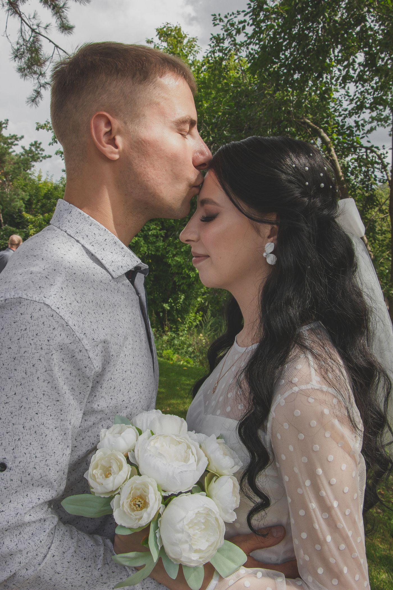
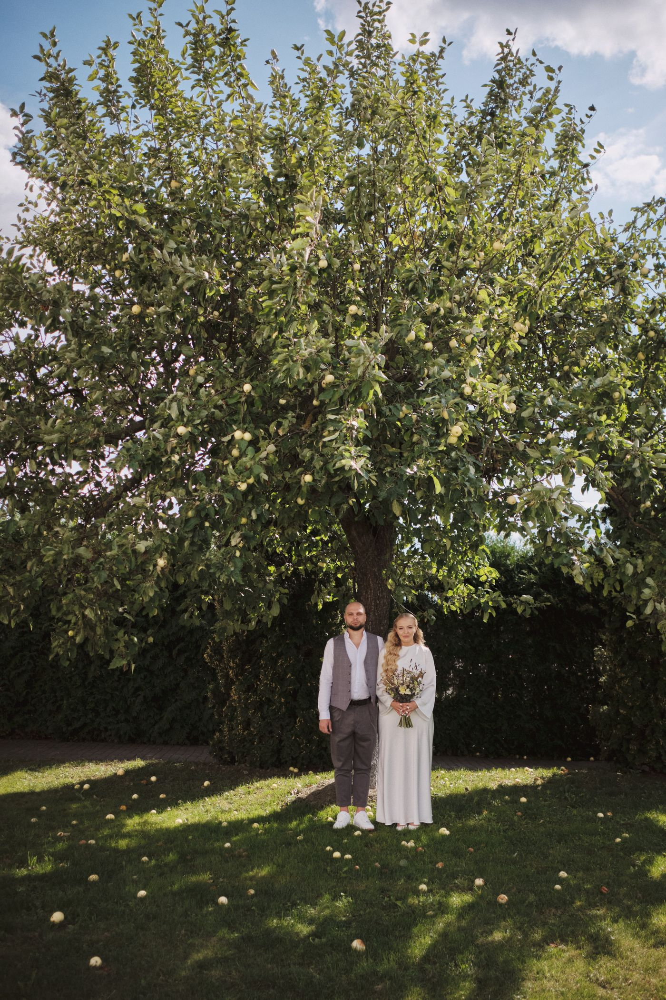
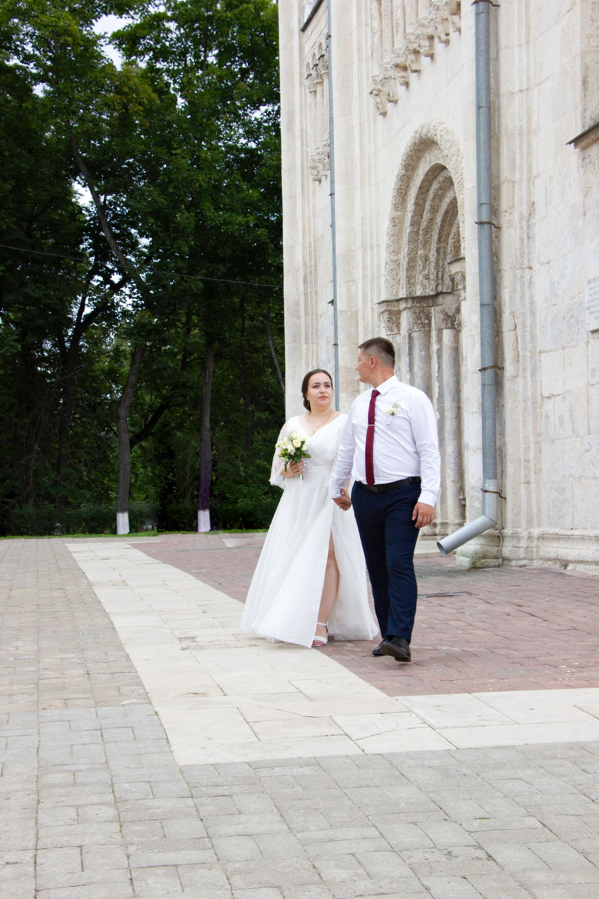

Wedding photography
Documentary-style wedding photography.
Documentary-style photography in Madison, from photographer Romulo Ueda.



All gallery photos are stock photos, labeled as such. They show the kind of work and setting described on this page, not this business.
Ueda Photography is a documentary-style photography studio in Madison, led by photographer Romulo Ueda. Sessions are photographed in a documentary style, and finished work is delivered through an online gallery, with prints, products, and gift certificates available.
Documentary-style wedding photography.
Engagement sessions in a documentary style.
Family sessions, photographed as they happen.
Event coverage in a documentary style.
Headshots and portrait sessions.
Lifestyle and editorial work, with online gallery delivery.
Finished work is delivered through an online gallery, with prints, products, and gift certificates available. No prices are shown here: third-party price ranges for weddings conflict and the studio site publishes none.
Address: 100 S Baldwin St, STE 100, Madison, WI 53703
Hours: Monday to Sunday 9:00 AM to 8:00 PM.
Phone: +1 608-228-7770
Ueda Photography serves Madison, WI. Questions? Call +1 608-228-7770.